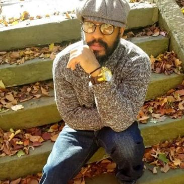
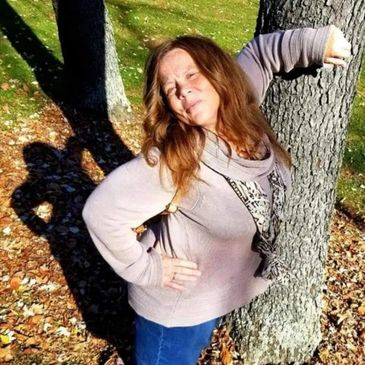
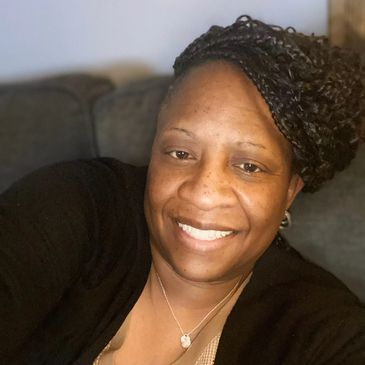
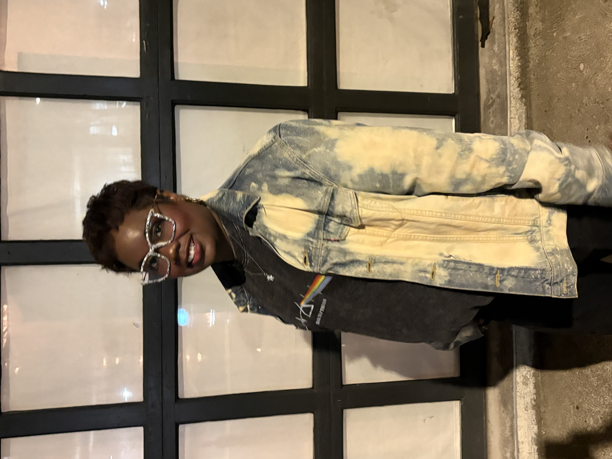
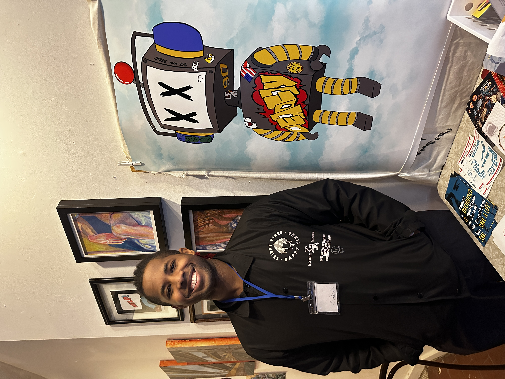

Our dedicated team of professionals is here to support you on your mental health journey. Get to know the faces behind Filmology and learn about their roles in providing care and resources to our community.

Founder & CEO
I am a survivor! What you are reading before you is a testament of a survivor of Anxiety, Depression and Abuse of over 30 years. Music would save my life and become my escape from my Depression. My love of music would allow me to collect all forms of music medias CD's, Records and Cassettes. My love of music wouldn't stop at collecting, while attending Peabody High school music would influence me to start writing for the school newspaper, which would help me become a published columnist for Street Beat Magazine. After graduation, I would follow in my mother's footsteps and go on to attend Community College of Allegheny County to receive a Certificate in Nurse Aide Training. Working as a CNA for 28 years, My love and passion for music would remain in my heart. Wanting to use my own experiences of Anxiety and Depression to help others, I found myself seeking the help of music once again. To share the joy and power of music to help cope with Anxiety, Depression and other Mental Disorders. Houzeofwaxx was created. Houzeofwaxx has given me purpose, To feel loved and to communicate with people just like me. To let survivors know that you 2 are not alone. You are loved. My name is Ali Deen. I AM A SURVIVOR OF ANXIETY & DEPRESSION!!!!

Lead Counselor
Survivors come in many forms, My name is Dana Zang and I attended Theil College majoring in Communications which would prepare me for my passion for medicine, working in my community and in the health care sector, where I have been for over 20 years. College help bridge my love of people, music and becoming an asset to my community. I am a survivor of anxiety, depression and panic attacks for most of my adult life. Being a survivor doesn't always mean by physical abuse. I was emotionally, verbally, and psychologically abused for over 2 decades. Music has always been my saving grace. Because it helps me relax and helps me self-soothe, just perusing through the different genres of music and learning about the culture is stimulating. I Feel here at Houzeofwaxx, We can help those who are in need of support by using our past to brighten other survivors futures.

Outreach Coordinator
Zainab has grown up in the city of Pittsburgh all of her life. She is also a mother of three loving children. Who also has been raised in the city of Pittsburgh. She has attended ICM where she earned her degree in Computer Science. After graduation she went on to worked at the General Nutrition Corporation. Where Zainab worked in many different capacities for over 20 plus years. Zainab been currently working for UPMC for over the past 10 years of service as Access Lead. Zainab also has a host of volunteer hours devoted to her community such as Core leadership, United way, East Field Gardens and The Houzeofwaxx (Bringing Mental health awareness ).

Program Manager
Sierra Mann is a filmmaker, co-director, and writer from Pittsburgh, Pennsylvania. She studied at Clarion University, where she minored in Theater Directing, developing a foundation in storytelling, performance, and collaborative creative work.
Program Manager
Michael Jasper is filmmaker, editor, and producer who has produced several Award Winning short films, documentaries, and promotional videos. His work highlights the experiences of diverse populations. Born and raised in Pittsburgh, PA he pursued studies at Pittsburgh Filmmakers after earning a Bachelor of Arts degree and MBA from Georgetown University in Washington, DC.

Program Manager
Talib is a CoFounder of Houzeofwaxx, IT Specialist, Artist, Creative ethusist, and Mental health advocate. As the editor and producer of houzeofwaxx's YouTube Channel I have several years of experience editing and shooting with camera and assisted with sound on a 48 hour project.Currently I work in IT at the Bank of New York and use my skills to contribute back to our program. as a artist I particpated in the 2025 Art Crawl and have a art brand called DEADBOY.